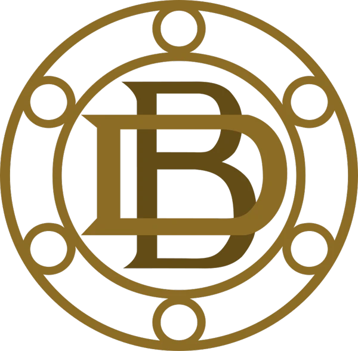
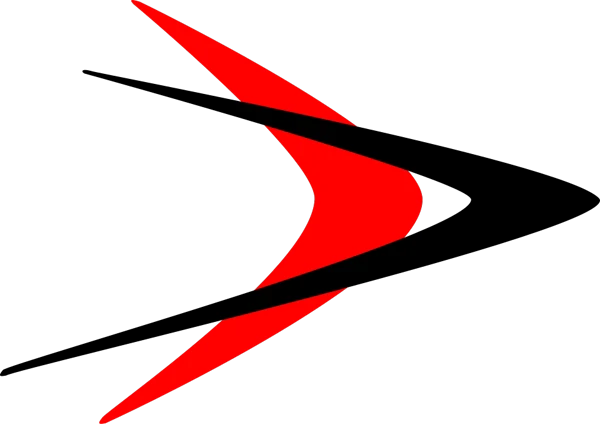
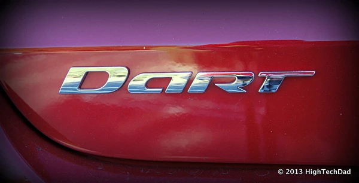
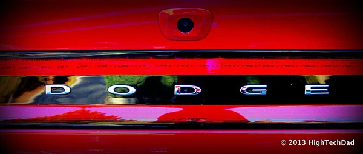
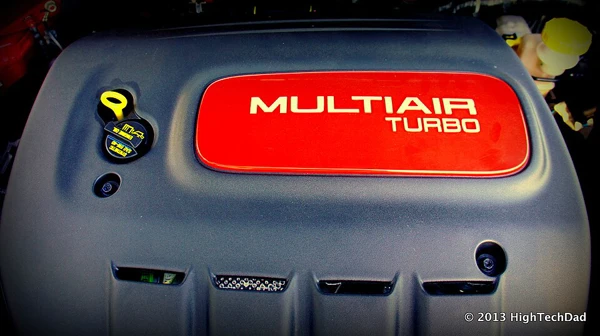
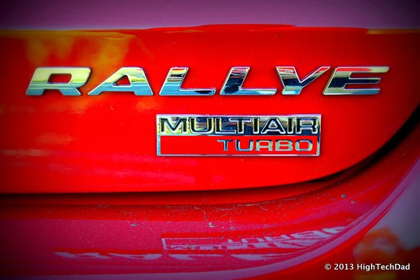

닷지 Dodge
닷지(Dodge)는 미국의 자동차 브랜드이다. 이 브랜드는 승용차, 픽업 트럭, 미니밴, SUV 등을 제작하고 판매한다.
최종 업데이트

닷지는 어떤 브랜드인가
닷지는 한때 미국을 대표하는 자동차 회사로 성장한 브랜드이다. 현재 모기업 스텔란티스 노스 아메리카 산하에서 승용차, 픽업 트럭, 미니밴, SUV 등 다양한 차량을 제작하고 판매한다.
이 브랜드는 픽업 트럭 분야에서 아성을 구축하며 미국인들이 선호하는 브랜드가 되었다. 또한, 캐러밴을 통해 '미니밴'이라는 새로운 시장을 창출하며 모기업의 성장과 부활에 크게 기여했다.
2022년에는 미국 내에서 캐주얼 브랜드로도 활약하며 여러 국가 시장에 진출했다.
닷지는 어떻게 시작되고 성장했나
닷지는 존 닷지와 호러스 닷지 형제가 디트로이트에서 자전거 공장을 운영하며 역사가 시작되었다. 이들은 올즈모빌과 포드에 부품을 공급하는 자동차 부품업체로 성장했다.
포드와의 결별 후 1914년 닷지 브라더스 사를 설립하고 첫 차량인 올드 베시를 출시했다. 이 차는 철제 차체와 우수한 성능, 다양한 색상으로 인기를 얻었다.
닷지는 전기 헤드램프 등 신기술과 성능 시험장을 갖추어 1920년 미국을 대표하는 자동차 회사로 거듭났다. 그러나 같은 해 닷지 형제가 세상을 떠나면서 어려움을 겪었고, 1929년 크라이슬러에 인수되었다.
닷지의 브랜드 아이덴티티는 무엇인가
닷지는 강력한 성능과 혁신적인 기술력을 바탕으로 다양한 차종을 선보이는 미국의 자동차 브랜드이다. 픽업 트럭 및 미니밴 시장 개척에 기여하며 대중의 사랑을 받았다.
닷지의 대표 제품과 서비스는 무엇인가
닷지는 승용차, 픽업 트럭, 미니밴, SUV 등 다양한 종류의 차량을 제작하고 판매한다. 특히 크라이슬러에 합병된 후 픽업 트럭 분야에서 아성을 구축하며 미국인들이 선호하는 브랜드가 되었다.
1989년에는 스포츠카 바이퍼를 발표하며 슈퍼카 시장에서도 주목받았다. 또한, 캐러밴을 통해 '미니밴'이라는 새로운 시장을 창출하는 데 핵심적인 역할을 했다.
어벤저, 그랜드 캐러밴, 니트로, 듀랑고, 캘리버, 차저, 챌린저, 다코타 등의 모델이 있다.
닷지는 지금 어떤 상태인가
닷지는 모기업 스텔란티스 노스 아메리카의 산하 브랜드로 운영된다. 2009년에는 닷지 디비전이 기존의 닷지와 픽업 트럭 부문의 램 트럭스로 분리되었다.
이 과정에서 닷지의 돌산양 로고는 램 트럭스로 넘어갔다. 2022년 현재 닷지는 미국 내에서 캐주얼 브랜드로도 활약하며 일본, 중국, 브라질 등에 진출해 있다.
닷지 로고는 어떻게 변해왔나

1910–1914- 1914–1928
- 1928–1955

1955–1962- 1962–1976
- 1963–1993
- 1993–2010
- 2010–2024

2013–2013
2013–2013
2013–2013
2013–2024- 2024–현재
시기는 위키데이터 로고 기간 또는 위키미디어 커먼즈 파일 정보 기준입니다. 이미지를 누르면 원본 파일과 라이선스를 볼 수 있습니다.
자주 묻는 질문
닷지는 어느 나라 브랜드인가요?
닷지는 미국의 모빌리티 브랜드입니다.
닷지는 언제 설립되었나요?
닷지는 1900년 설립되었습니다.
닷지의 브랜드 아이덴티티는 무엇인가요?
닷지는 강력한 성능과 혁신적인 기술력을 바탕으로 다양한 차종을 선보이는 미국의 자동차 브랜드이다.
닷지의 대표 제품은 무엇인가요?
닷지는 승용차, 픽업 트럭, 미니밴, SUV 등 다양한 종류의 차량을 제작하고 판매한다.
닷지는 어느 기업이 소유하고 있나요?
닷지는 모기업 스텔란티스 노스 아메리카의 산하 브랜드로 운영된다.
닷지의 창업자는 누구인가요?
닷지의 창업자는 John Francis Dodge, Horace Elgin Dodge입니다(위키데이터 기준).
닷지의 본사는 어디에 있나요?
닷지의 본사는 Dodge Building에 있습니다(위키데이터 기준).
출처와 검증
닷지 관련 참고: 공식 웹사이트 · 위키데이터 Q27564 · 한국어 위키백과 · 영어 위키백과. 브랜드명은 한글과 원어를 함께 표기하되 데이터에 없는 표기는 만들지 않습니다. 기원 국가·설립연도는 검수된 정의문에서 확인된 값을 우선하고, 없을 때만 공식 웹사이트 URL이 일치하는 위키데이터 개체의 값을 씁니다. 탄생일의 월·일은 위키데이터, 위키백과 정보상자, 본문 가운데 같은 연월로 확인되는 값만 싣고, 출처끼리 다르면 싣지 않습니다. 웹 첫 보관은 인터넷 아카이브가 공식 사이트 첫 화면을 처음 보관한 날로, 사이트 개설일과 다를 수 있습니다. 위키데이터 값은 2026-09-07 기준입니다.